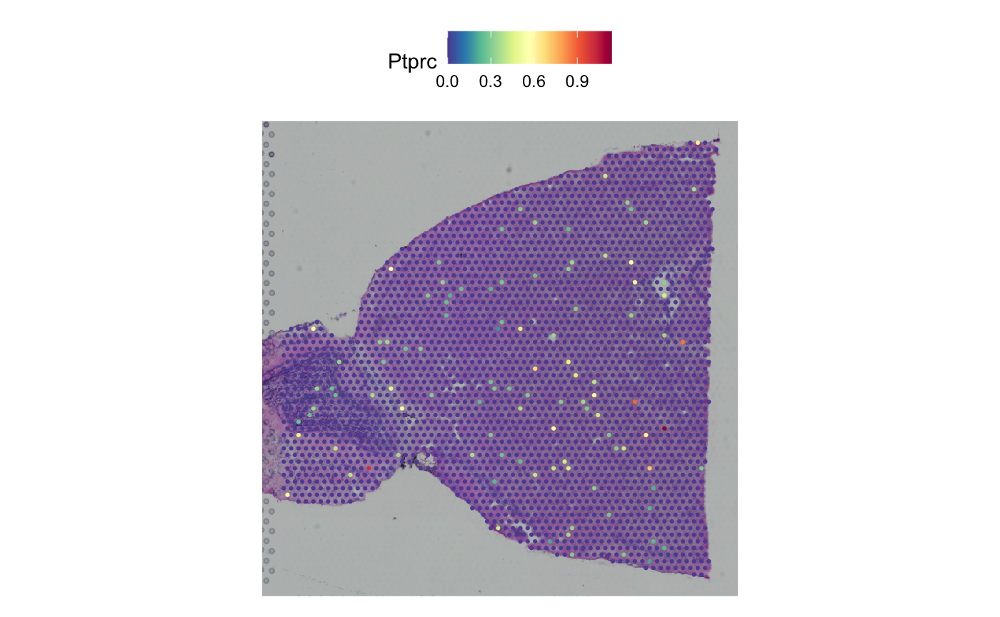

This vignette showcases how to convert between Seurat
objects and AnnData files via h5Seurat files. This allows
interoperability between Seurat and Scanpy.
Converting from Seurat to AnnData via h5Seurat
To demonstrate conversion from a Seurat object to an
AnnData file, we’ll use the pbmc3k.final dataset from
SeuratData - a processed PBMC dataset with clustering and UMAP.
library(SeuratData)
# Install pbmc3k if not already installed
if (!"pbmc3k.final" %in% rownames(InstalledData())) {
InstallData("pbmc3k")
}
# Load the processed pbmc3k dataset
data("pbmc3k.final", package = "pbmc3k.SeuratData")
pbmc <- UpdateSeuratObject(pbmc3k.final)
pbmc
#> An object of class Seurat
#> 13714 features across 2638 samples within 1 assay
#> Active assay: RNA (13714 features, 2000 variable features)
#> 3 layers present: counts, data, scale.data
#> 2 dimensional reductions calculated: pca, umapThis is a fully processed Seurat object with clustering and dimensional reductions:

Converting the Seurat object to an AnnData file is a
two-step process:
- Save the
Seuratobject as an h5Seurat file usingSaveH5Seurat() - Convert to AnnData using
Convert()
SaveH5Seurat(pbmc, filename = "pbmc3k.h5Seurat", overwrite = TRUE)
Convert("pbmc3k.h5Seurat", dest = "h5ad", overwrite = TRUE)We can view the AnnData file in Scanpy:
import scanpy as sc
adata = sc.read_h5ad("pbmc3k.h5ad")
print(adata)
#> AnnData object with n_obs × n_vars = 2638 × 13714
#> obs: 'orig.ident', 'nCount_RNA', 'nFeature_RNA', 'seurat_annotations', 'percent.mt', 'RNA_snn_res.0.5', 'seurat_clusters'
#> var: 'vst.mean', 'vst.variance', 'vst.variance.expected', 'vst.variance.standardized', 'vst.variable'
#> uns: 'n_variable_features', 'neighbors', 'seurat'
#> obsm: 'X_pca', 'X_umap'
#> varm: 'PCs'
#> obsp: 'connectivities', 'distances'And visualize with cluster annotations:
import matplotlib
matplotlib.use('Agg')
import matplotlib.pyplot as plt
sc.pl.umap(adata, color='seurat_annotations', legend_loc='on data', legend_fontsize=8, show=False)
plt.tight_layout()
plt.savefig('umap_plot.png', dpi=100, bbox_inches='tight')
plt.close()
Converting from AnnData to Seurat via h5Seurat
To demonstrate conversion from AnnData to Seurat, we’ll use a colorectal cancer sample from CellxGene that’s bundled with the package.
# Copy bundled CRC h5ad file to working directory
h5ad_path <- system.file("testdata", "crc_sample.h5ad", package = "srtdisk")
if (file.exists(h5ad_path)) {
file.copy(h5ad_path, "crc_sample.h5ad", overwrite = TRUE)
} else {
# Download if not bundled (for development)
download.file(
"https://datasets.cellxgene.cziscience.com/91cf9a95-0b9a-4ece-b8eb-7b9e3409a0d3.h5ad",
"crc_sample.h5ad",
mode = "wb"
)
}
#> [1] TRUEView the h5ad file in Scanpy:
import scanpy as sc
adata_crc = sc.read_h5ad("crc_sample.h5ad")
print(adata_crc)
#> AnnData object with n_obs × n_vars = 935 × 25344
#> obs: 'total_counts', 'log1p_total_counts', 'Sample ID', 'PhenoGraph_clusters', 'Patient', 'Primary Site', 'Sample Type', 'Site', 'DC 1', 'DC 2', 'DC 3', 'DC 4', 'Module Absorptive Intestine Score', 'Module EMT Score', 'Module Injury Repair Score', 'Module Squamous Score', 'Module Neuroendocrine Score', 'Module Endoderm Development Score', 'Module Tumor ISC-like Score', 'Module Secretory Intestine Score', 'Module Intestine Score', 'palantir_pseudotime', 'palantir_neuroendocrine_branch_probability', 'palantir_squamous_branch_probability', 'Fetal, Conserved', 'Module Osteoblast Score', 'Treatment', 'donor_id', 'development_stage_ontology_term_id', 'sex_ontology_term_id', 'self_reported_ethnicity_ontology_term_id', 'disease_ontology_term_id', 'tissue_type', 'tissue_ontology_term_id', 'cell_type_ontology_term_id', 'assay_ontology_term_id', 'suspension_type', 'Tumor Status', 'is_primary_data', 'cell_type', 'assay', 'disease', 'sex', 'tissue', 'self_reported_ethnicity', 'development_stage', 'observation_joinid'
#> var: 'total_counts', 'highly_variable', 'gene', 'feature_is_filtered', 'feature_name', 'feature_reference', 'feature_biotype', 'feature_length', 'feature_type'
#> uns: 'citation', 'default_embedding', 'neighbors', 'organism', 'organism_ontology_term_id', 'schema_reference', 'schema_version', 'title'
#> obsm: 'X_umap'
print("\nobs columns:", list(adata_crc.obs.columns)[:10])
#>
#> obs columns: ['total_counts', 'log1p_total_counts', 'Sample ID', 'PhenoGraph_clusters', 'Patient', 'Primary Site', 'Sample Type', 'Site', 'DC 1', 'DC 2']Convert to Seurat:
Convert("crc_sample.h5ad", dest = "h5seurat", overwrite = TRUE)
crc <- LoadH5Seurat("crc_sample.h5seurat")
crc
#> An object of class Seurat
#> 25344 features across 935 samples within 1 assay
#> Active assay: RNA (25344 features, 0 variable features)
#> 1 layer present: counts
#> 1 dimensional reduction calculated: umap
# Plot UMAP if available
if ("umap" %in% Reductions(crc)) {
DimPlot(crc, reduction = "umap", pt.size = 0.5)
}
Visium Spatial Data Conversion
For spatial transcriptomics data, we use the stxBrain dataset from SeuratData (Visium v2 format):
library(SeuratData)
# Install stxBrain if not already installed
if (!"stxBrain" %in% rownames(InstalledData())) {
InstallData("stxBrain")
}
# Load anterior1 section
brain <- UpdateSeuratObject(LoadData("stxBrain", type = "anterior1"))
brain <- NormalizeData(brain)
SpatialFeaturePlot(brain, features = "Hpca")
Convert to h5ad:
SaveH5Seurat(brain, filename = "stxBrain.h5Seurat", overwrite = TRUE)
Convert("stxBrain.h5Seurat", dest = "h5ad", overwrite = TRUE)View in Python with Squidpy:
import squidpy as sq
import scanpy as sc
import matplotlib
matplotlib.use('Agg')
import matplotlib.pyplot as plt
adata_spatial = sc.read_h5ad("stxBrain.h5ad")
fig, ax = plt.subplots(figsize=(10, 8))
sq.pl.spatial_scatter(
adata_spatial,
color="Hpca",
library_id="anterior1",
img_res_key="lowres",
size=1.5,
ax=ax
)
plt.savefig('stxBrain_plot.png', dpi=100, bbox_inches='tight')
plt.close()
Python Environment Setup
For optimal interoperability, we recommend using a conda environment with scanpy:
library(reticulate)
# Use existing scverse environment
use_condaenv("scverse", required = FALSE)
# Or create a new environment
# reticulate::conda_create("scverse")
# reticulate::conda_install("scverse", c("scanpy", "squidpy", "anndata"))
# Verify configuration
py_config()Metadata Preservation
srtdisk preserves cell metadata during conversion:
- Categorical data: Cell types, clusters, batch labels
- Numerical data: QC metrics like nCount_RNA, percent.mt
- Factor ordering: Level order for visualization
Session Info
sessionInfo()
#> R version 4.5.2 (2025-10-31)
#> Platform: aarch64-apple-darwin20
#> Running under: macOS Tahoe 26.2
#>
#> Matrix products: default
#> BLAS: /System/Library/Frameworks/Accelerate.framework/Versions/A/Frameworks/vecLib.framework/Versions/A/libBLAS.dylib
#> LAPACK: /Library/Frameworks/R.framework/Versions/4.5-arm64/Resources/lib/libRlapack.dylib; LAPACK version 3.12.1
#>
#> locale:
#> [1] en_US.UTF-8/en_US.UTF-8/en_US.UTF-8/C/en_US.UTF-8/en_US.UTF-8
#>
#> time zone: America/Indiana/Indianapolis
#> tzcode source: internal
#>
#> attached base packages:
#> [1] stats graphics grDevices utils datasets methods base
#>
#> other attached packages:
#> [1] stxKidney.SeuratData_0.1.0 stxBrain.SeuratData_0.1.2
#> [3] ssHippo.SeuratData_3.1.4 pbmcref.SeuratData_1.0.0
#> [5] pbmcMultiome.SeuratData_0.1.4 pbmc3k.SeuratData_3.1.4
#> [7] panc8.SeuratData_3.0.2 cbmc.SeuratData_3.1.4
#> [9] SeuratData_0.2.2.9002 srtdisk_0.1.0
#> [11] Seurat_5.4.0 SeuratObject_5.3.0
#> [13] sp_2.2-0 reticulate_1.44.1
#>
#> loaded via a namespace (and not attached):
#> [1] RColorBrewer_1.1-3 jsonlite_2.0.0 magrittr_2.0.4
#> [4] spatstat.utils_3.2-1 farver_2.1.2 rmarkdown_2.30
#> [7] fs_1.6.6 ragg_1.5.0 vctrs_0.7.0
#> [10] ROCR_1.0-11 spatstat.explore_3.6-0 htmltools_0.5.9
#> [13] sass_0.4.10 sctransform_0.4.3 parallelly_1.46.1
#> [16] KernSmooth_2.23-26 bslib_0.9.0 htmlwidgets_1.6.4
#> [19] desc_1.4.3 ica_1.0-3 plyr_1.8.9
#> [22] plotly_4.11.0 zoo_1.8-15 cachem_1.1.0
#> [25] igraph_2.2.1 mime_0.13 lifecycle_1.0.5
#> [28] pkgconfig_2.0.3 Matrix_1.7-4 R6_2.6.1
#> [31] fastmap_1.2.0 fitdistrplus_1.2-4 future_1.69.0
#> [34] shiny_1.12.1 digest_0.6.39 patchwork_1.3.2
#> [37] tensor_1.5.1 RSpectra_0.16-2 irlba_2.3.5.1
#> [40] textshaping_1.0.4 labeling_0.4.3 progressr_0.18.0
#> [43] spatstat.sparse_3.1-0 httr_1.4.7 polyclip_1.10-7
#> [46] abind_1.4-8 compiler_4.5.2 bit64_4.6.0-1
#> [49] withr_3.0.2 S7_0.2.1 fastDummies_1.7.5
#> [52] MASS_7.3-65 rappdirs_0.3.4 tools_4.5.2
#> [55] lmtest_0.9-40 otel_0.2.0 httpuv_1.6.16
#> [58] future.apply_1.20.1 goftest_1.2-3 glue_1.8.0
#> [61] nlme_3.1-168 promises_1.5.0 grid_4.5.2
#> [64] Rtsne_0.17 cluster_2.1.8.1 reshape2_1.4.5
#> [67] generics_0.1.4 hdf5r_1.3.12 gtable_0.3.6
#> [70] spatstat.data_3.1-9 tidyr_1.3.2 data.table_1.18.0
#> [73] spatstat.geom_3.7-0 RcppAnnoy_0.0.23 ggrepel_0.9.6
#> [76] RANN_2.6.2 pillar_1.11.1 stringr_1.6.0
#> [79] spam_2.11-3 RcppHNSW_0.6.0 later_1.4.5
#> [82] splines_4.5.2 dplyr_1.1.4 lattice_0.22-7
#> [85] survival_3.8-6 bit_4.6.0 deldir_2.0-4
#> [88] tidyselect_1.2.1 miniUI_0.1.2 pbapply_1.7-4
#> [91] knitr_1.51 gridExtra_2.3 scattermore_1.2
#> [94] xfun_0.56 matrixStats_1.5.0 stringi_1.8.7
#> [97] lazyeval_0.2.2 yaml_2.3.12 evaluate_1.0.5
#> [100] codetools_0.2-20 tibble_3.3.1 cli_3.6.5
#> [103] uwot_0.2.4 xtable_1.8-4 systemfonts_1.3.1
#> [106] jquerylib_0.1.4 dichromat_2.0-0.1 Rcpp_1.1.1
#> [109] globals_0.18.0 spatstat.random_3.4-4 png_0.1-8
#> [112] spatstat.univar_3.1-6 parallel_4.5.2 pkgdown_2.2.0
#> [115] ggplot2_4.0.1 dotCall64_1.2 listenv_0.10.0
#> [118] viridisLite_0.4.2 scales_1.4.0 ggridges_0.5.7
#> [121] purrr_1.2.1 crayon_1.5.3 rlang_1.1.7
#> [124] cowplot_1.2.0